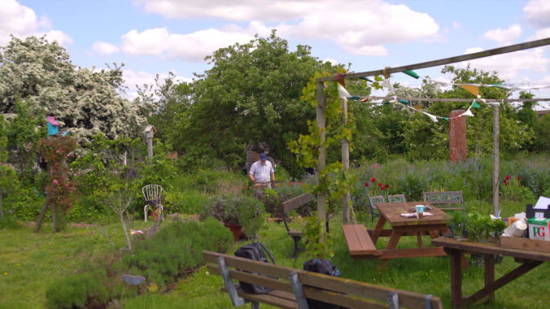

A great story is what helps your charity connect with people and gain support. But telling that story in a way that really hits home takes more than just pointing a camera and reading a script. That’s where a charity videographer can make all the difference.
At Munjiri Videos, we know the challenges charities face, tight budgets, deadlines that can’t be moved, and the need to share genuine stories that inspire real action. We’re Katy and Eugene, your charity videographer team, with years of experience and a real passion for making a social impact. Our videos don’t just capture moments, they share the heart of what your charity stands for.
A charity videographer specializes in producing videos that showcase the meaningful work your organization does. From filming on-the-ground projects to interviewing beneficiaries and staff, we handle every stage of the video production process with care and professionalism.
Key Services We Provide:
Documentary-style storytelling that brings your cause to life
Event coverage capturing fundraising galas, community outreach, and more
Social media video packages tailored to boost engagement and shareability
Training workshops to empower your team to create ongoing video content
Choosing the right charity videographer is about trust, creativity, and shared values. Here’s why we stand out:
Collaborative Approach: We work closely with you to understand your vision and ensure your story is told authentically.
Versatility: Whether you need a short social video or a detailed documentary, we tailor our services to your needs.
Global Experience: Based in Portugal and South Africa, we have worked with charities worldwide, from grassroots organizations to international nonprofits.
We partnered with the Obama Foundation to create a powerful video highlighting the work of Eric Mlambo, founder of the Footprints Foundation in South Africa, and his impact on girls' education and health.
We Created: A documentary-style video celebrating fathers and their role in shaping a brighter future. It focuses on Eric’s mission, inspired by his daughter, and the Foundation’s support through the Girls Opportunity Alliance.
Key Highlights:
Eric’s personal story and his work in South Africa.
A Father’s Day message about how his daughter inspires his mission for all girls.
Powerful visuals showcasing community-driven solutions.
Impact: The video amplified Eric’s story, increasing engagement with the Obama Foundation’s programs and sparking global conversations, while attracting more supporters to the Foundation’s mission.
In today’s world, access to technology means access to education, jobs, and opportunities, but millions of people still don’t have it. Computer Aid is changing that by providing refurbished computers to schools, nonprofits, and communities worldwide, helping to close the digital divide.
We Created: A compelling video showcasing how Computer Aid’s work is transforming education and creating opportunities through technology.
Key Highlights:
Captured real stories of students and communities gaining access to computers.
Highlighted how refurbished tech can power education and social change.
Impact: The video helped raise awareness, increase support, and inspire action, ensuring more people around the world get access to the digital tools they need.
In many rural areas, kids might have a school to attend, but without trained teachers and quality learning materials, they struggle to get a real education. That’s where Impact Network makes a difference. Their programs give local teachers the tools and support they need, like tablets, projectors, and weekly coaching, to make learning fun, interactive, and effective.
We Created: A video that shows how technology and training are helping students in Zambia learn and thrive.
Key Highlights:
Highlighted how their approach led to huge improvements in reading and math skills.
Shared real student stories to show the impact of having a great education.
Impact: The video helped raise awareness and attract new donors, giving more kids the chance to get a quality education and a brighter future.


“I enjoyed working with the duo from the first day to the end. I like their professionalism and their adaptation to different situations. They have worked with us in the rain and sunshine, I actually thought Katy wouldn't be able to visit some places we work in because of the nature of the environment, but she did. Keep up the good work. On behalf of the team and our participants, we say Karibu tena, Welcome again!!”
David Mulo, Pollination Project
Katy reached out to us a few times via email and we set up a time to talk a few years ago. At the time, we didn’t have a budget for an unplanned video but it was nice to hear about Munjiri Videos. Katy was so thoughtful in emailing to let us know when a few years later she’d be in Zambia, and we realized that we were in a different place and definitely had some video needs! We were able to create a plan for her to visit, and she worked deftly with our team to create a beautiful, thoughtful, and insightful video. We have done a few different videos over the years and this one really captured the essence of the communities we work with and our schools. The footage is the best we have seen from our schools - the colors, images, shots etc. It is amazing that Katy was able to find a compelling story to fit what we needed and we are so grateful for her expertise and time!
Reshma Patel, Impact Network
“Despite the fact that the situation was different to what we’d imagined, Katy was fantastic at taking my brief and totally running with it. She never made a fuss, she just did what she could and completely blew our minds with the work that she produced – goose bumps and wet eyes all round PB World!”
Claire Wouters, Pic's Peanut Butter
Walton Charity is one of the UK’s oldest charities, dedicated to helping disadvantaged individuals access housing, education, and employment. One of their key initiatives is Walton’s vibrant Community Allotment, a green haven where more than just fruits and vegetables grow. This space serves as a stepping stone for personal development, offering volunteering opportunities and work experience.
We Created: A video capturing the amazingness of Walton’s Community Allotment, showcasing how gardening helps individuals build confidence, resilience, and a sense of belonging.
Key Highlights:
Showcased the allotment as a space for personal growth and skill development.
Highlighted real stories of volunteers gaining confidence and work experience.
Impact: The video inspired increased community engagement, encouraging more people to volunteer, participate in events, and support Walton Charity’s mission.
Great video content is only valuable if it reaches the right audience. As experienced charity videographers, we don’t just produce videos, we help you strategize how to use them effectively.
Optimizing videos for social platforms like Instagram, Facebook, and YouTube
Providing advice on video marketing and distribution
Creating content that motivates donors, volunteers, and partners
With climate change making farming harder and unpredictable weather threatening livelihoods, SCIAF’s Climate Challenge Programme Malawi (CCPM) is helping communities adapt. Funded by the Scottish Government, this initiative supports tens of thousands of people in Southern Malawi, giving them the tools and knowledge to build a more sustainable future.
We Created: A documentary-style video showcasing how CCPM is making a real difference, from sustainable farming techniques to community-led solutions.
Key Highlights:
Captured real stories from Malawian farmers adapting to climate change.
Showed how training and resources are helping communities secure their future.
Impact: The video helped raise awareness about the urgent need for climate resilience and encouraged more people to support sustainable solutions.
The Pollination Project provides seed funding to grassroots leaders around the world, empowering them to create meaningful, community-driven change. As part of their Profiles in Compassion series, we told the story of David Mulo and his organization, Green-Kenya, which uses sports to teach young people about environmental sustainability and leadership.
We Created: A documentary-style video showcasing David’s journey and the impact of Green-Kenya, inspiring others to take action.
Key Highlights:
Captured David’s passion and dedication to using sports for environmental education.
Showed how small grants can create big change at the grassroots level.
Impact: The video helped raise awareness for Green-Kenya’s work and showcased The Pollination Project’s commitment to supporting grassroots leaders making a difference.


Here’s what working with Munjiri Videos looks like from start to finish:
Discovery Call: We learn about your charity’s goals and story.
Planning: Together, we craft a clear, compelling video concept.
Production: We capture high-quality footage with a relaxed, professional approach.
Editing: We shape your story with thoughtful editing, music, and graphics.
Delivery & Support: You receive your final video along with guidance on sharing it for maximum impact.

Brand Video Production
Social Media Video Production
Nature Video Production
Creative Video Productions
Charity Video Production
Drone Videographer
Event Video Production
Product Video Production
Travel Video Production
Learn Video Making
Video Storytelling
Video Making Tips
Video Marketing & Social Media Strategies
Nature Stories
Behind the Scenes
Client Stories
Locations & Travel
Location
Based in Portugal and South Africa, offering video production services worldwide.
Email: katy@munjiri.com
Get updates and free resources.